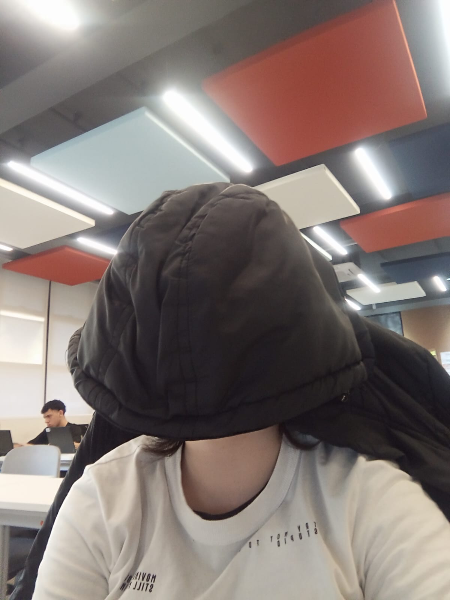

About Me
The name is Cecília Felipiaki Medeiros, i'm a 16 year old teenager, im frequenting a school named CAIC Madezatti, i speak fluent english, i can read, write and understand it without much truble, but i can't say much about my pronounciantion because i never spoke to someone with english as their first language. i have a lot of free time so i spend my days just relaxing by either playing video-games or drawing. Im an aspiring artist, i love drawing and creating stories, it brings me joy and i would love for other people to see it and become inspired to create something too. I think people are really negative nowadays and i want to add a little bit more of positivity in the world.